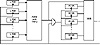
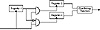
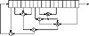
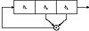

| Previous | Table of Contents | Next |
LFSR/FCSR Summation/Parity Cascade
The theory is that addition with carry destroys the algebraic properties of LFSRs, and that XOR destroys the algebraic properties of FCSRs. This generator combines those ideas, as used in the LFSR/FCSR Summation Generator and the LFSR/FCSR Parity Generator just listed, with the Gollmann cascade.
The generator is a series of arrays of registers, with the clock of each array controlled by the output of the previous array. Figure 17.6 is one stage of this generator. The first array of LFSRs is clocked and the results are combined using addition with carry. If the output of this combining function is 1, then the next array (of FCSRs) is clocked and the output of those FCSRs is combined with the output of the previous combining function using XOR. If the output of the first combining function is 0, then the array of FCSRs is not clocked and the output is simply added to the carry from the previous round. If the output of this second combining function is 1, then the third array of LFSRs is clocked, and so on.
This generator uses a lot of registers: n*m, where n is the number of stages and m is the number of registers per stage. I recommend n = 10 and m = 5.
Alternating Stop-and-Go Generators
These generators are stop-and-go generators with FCSRs instead of some LFSRs. Additionally, the XOR operation can be replaced with an addition with carry (see Figure 17.7).

Figure 17.6 Concoction Generator.
Shrinking Generators
There are four basic generator types using FCSRs:

Figure 17.7 Alternating stop-and-go generators.
It is easy to imagine a more complicated feedback sequence than the ones used in LFSRs or FCSRs. The problem is that there isn’t any mathematical theory that can analyze them. You’ll get something, but who knows what it is? In particular, here are some problems with nonlinear-feedback shift register sequences.
On the plus side, if there is no theory to analyze nonlinear-feedback shift registers for security, there are few tools to cryptanalyze stream ciphers based on them. We can use nonlinear-feedback shift registers in stream-cipher design, but we have to be careful.
In a nonlinear-feedback shift register, the feedback function can be anything you want (see Figure 17.8).

Figure 17.8 A nonlinear-feedback shift register (probably insecure).

Figure 17.9 3-bit nonlinear feedback shift register.
Figure 17.9 is a 3-bit shift register with the following feedback function: The new bit is the first bit times the second bit. If it is initialized with the value 110, it produces the following sequence of internal states:
And so on forever.
The output sequence is the string of least significant bits:
This isn’t terribly useful.
It gets even worse. If the initial value is 100, it produces 010, 001, then repeats forever at 000. If the initial value is 111, it repeats itself forever right from the start.
Some work has been done on computing the linear complexity of the product of two LFSRs [1650,726,1364,630,658,659]. A construction that involved computing LFSRs over a field of odd characteristic [310] is insecure [842].
Many other stream ciphers have appeared in the literature here and there. Here are some of them.
Pless Generator
This generator is designed around the capabilities of the J-K flip-flop [1250]. Eight LFSRs drive four J-K flip-flops; each flip-flop acts as a nonlinear combiner for two of the LFSRs. To avoid the problem that knowledge of an output of the flip-flop identifies both the source and value of the next output bit, clock the four flip-flops and then interleave the outputs to yield the final keystream.
This algorithm has been cryptanalyzed by attacking each of the four flip-flops independently [1356]. Additionally, combining J-K flip-flops is cryptographically weak; generators of this type succumb to correlation attacks [1451].
Cellular Automaton Generator
In [1608,1609], Steve Wolfram proposed using a one-dimensional cellular automaton as a pseudo-random-number generator. Cellular automata is not the subject of this book, but Wolfram’s generator consisted of a one-dimensional array of bits, a1, a2, a3,..., ak,..., an, and an update function:
The bit is extracted from one of the ak values; which one really doesn’t matter.
The generator’s behavior appears to be quite random. However, there is a known-plaintext attack against these generators [1052]. This attack works on a PC with values of n up to 500 bits. Additionally, Paul Bardell proved that the output of a cellular automaton can also be generated by a linear-feedback shift register of equal length and is therefore no more secure [83].
1/p Generator
This generator was proposed, and then cryptanalyzed, in [193]. If the internal state of the generator at time t is xt, then
The output of the generator is the least significant bit of xt div p, where div is the truncated integer division. For maximum period, the constants b and p should be chosen so that p is prime and b is a primitive root mod p. Unfortunately, this generator isn’t secure. (Note that for b = 2, an FCSR with a connection integer p outputs the reverse of this sequence.)
| Previous | Table of Contents | Next |
){kind=link}
){kind=link}
){kind=link}
){kind=link}
){kind=link}
){kind=link}
){kind=link}
){kind=link}